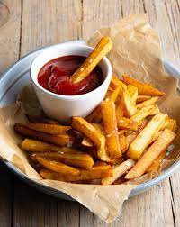

all about French Friesüçü

french fries, also called chips, finger chips, fries, or French pommes frites, side dish or snack typically made from deep-fried potatoes that have been cut into various shapes, especially thin strips. Fries are often salted and served with other items, including ketchup, mayonnaise, or vinegar.